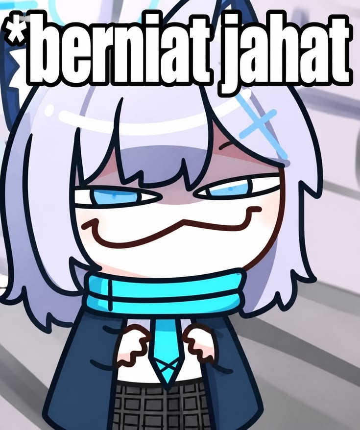
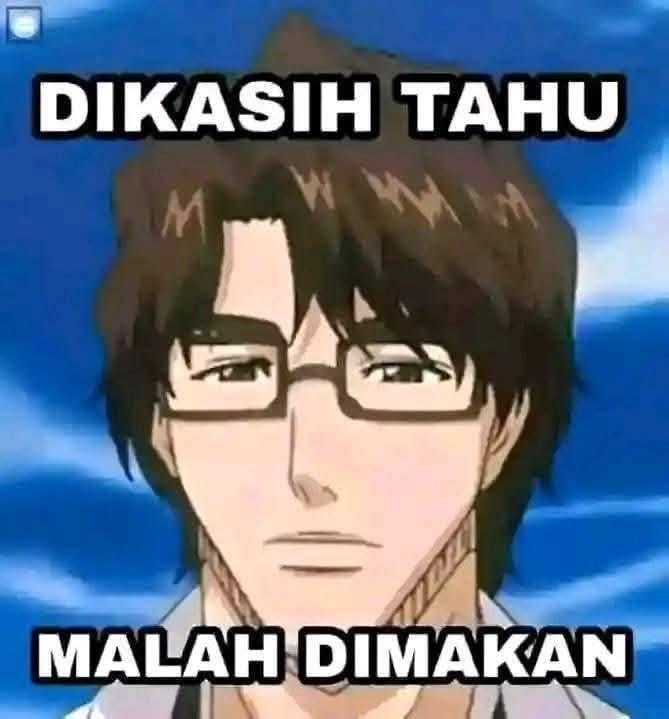

Papan
Peringkat
Papan Peringkat Nihongo Rajio
Dihitung berdasarkan jumlah keikutsertaan menyimak siaran rutin mingguan Nihon Go Rajio dan keaktifan menjawab kuis interaktif bahasa Jepang.

#2Kenzou Arata
Kelas XI-MIPA 2 · Divisi Bahasa Periode 2025/2026"Selalu sedia mendengarkan siaran rajio sepulang sekolah!"

#1Sakura Yuna
Kelas XI-Bahasa · Divisi Bahasa Periode 2025/2026"Tidak pernah absen menjawab kuis kosakata kanji di setiap sesi rajio!"
⭐ BINTANG UTAMA KLUBHaikal Daichi
Kelas X-7 · Divisi Desain Periode 2025/2026"Rajin bertanya makna ungkapan gaul di sesi tanya jawab radio."
Daftar Peringkat 4 – 10
🟢 Musim Aktif Periode 2025/2026Kriteria Penilaian Papan Peringkat
Setiap dedikasi dan keaktifan yang kamu berikan untuk Mirai No Hana diapresiasi secara transparan dan berkala sepanjang periode kepengurusan 2025/2026!
Aktivitas Siaran & Kuis
Dihitung dari total berapa kali anggota aktif menyimak siaran suara radio dan menjawab kuis bahasa Jepang mingguan.
Presensi Kumpul Rutin
Dihitung dari total kehadiran fisik pada perkumpulan mingguan, forum diskusi, dan persiapan acara resmi.
Karya & Delegasi Lomba
Dihitung dari keikutsertaan lomba eksternal (Bunkasai), raihan piala/juara, serta sumbangsih karya artikel & desain klub.